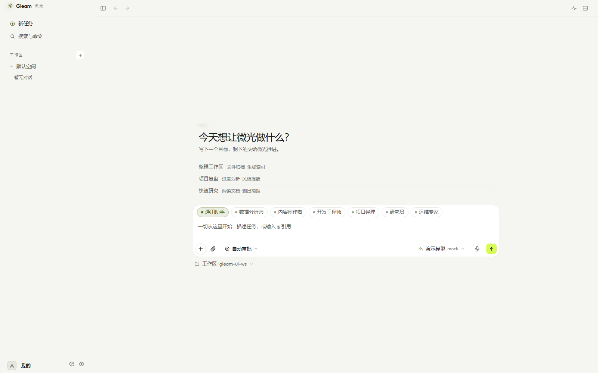
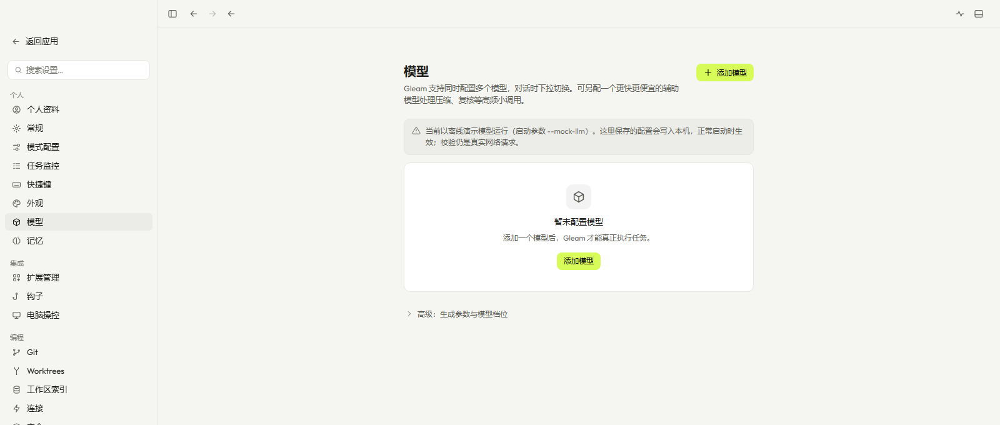
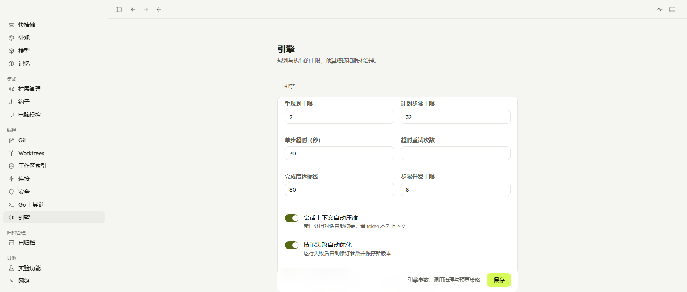

界面预览
简洁而不简单，每个细节都经过打磨

主界面 · 对话与任务

模型配置 · 多厂商支持

引擎设置 · 精细控制

角色配置 · 专家团
不是又一个聊天机器人，而是真正能帮你干活的助手
不是简单的问答，而是完整的任务闭环。先规划步骤，再逐步执行，最后自我检查。
对话和任务数据默认留在本机。只有调用真实 LLM 时才走你配置的 API。
内置 Mock 模型可离线体验。支持 OpenAI、Anthropic、智谱、深度求索等多家 API。
预设分析师、工程师、产品经理等角色，也可自定义。不同任务用不同专家。
紧凑的工具 schema、指数退避重试、角色提示词精简，Token 消耗降低 55%。
内置语音识别，说话就能输入。支持中英文，识别准确率高。
简洁而不简单，每个细节都经过打磨



三步上手，无需复杂配置
选择你的平台，下载单文件可执行程序。
# Windows
gleam-windows-amd64.exe
双击运行，默认使用 Mock 模型，可离线体验。
# 双击即可运行
# 或命令行启动
./gleam
如需真实 LLM，在设置页配置 API Key。
# 支持 OpenAI / Anthropic / 智谱 / 深度求索等
#
也可自建兼容 OpenAI 协议的服务